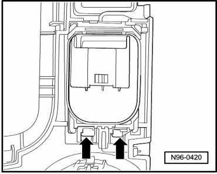

Power Mirror Control Module: Service and Repair
Center Console Lamps and Switches
Exterior Rearview Mirror Adjustment Module
The module for outside mirror adjustment (depending on equipment) consists of the following components:
• Mirror Adjustment Switch (E43)
• Mirror Selector Switch (E48)
• Switch for outside mirror heating (E231)
• Mirror Folding Switch (E263)
• Mirror Adjusting Switch Light (L78)
Removing
- Switch off ignition, switch off all electrical consumers and remove ignition key.
- Remove selector lever cover.
- Disengage retaining tabs - arrows - and remove module for outside mirror adjustment out of cover.

Installing
Install in reverse order of removal.